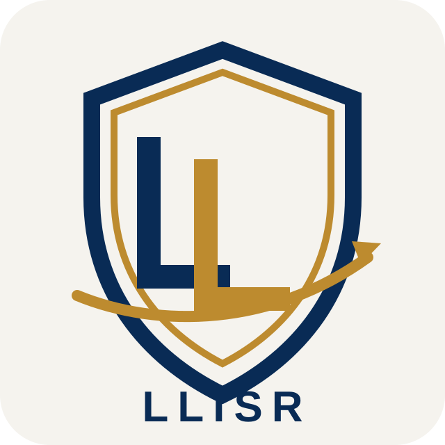

Asistencia personal
Coordinación de necesidades cotidianas, citas y proveedores para facilitar la organización de la estancia.

LLISR / Conserjería VIP y asistencia en Israel
Atención personalizada · Coordinación profesional
LLISR ofrece asistencia personal y coordinación de conserjería en Israel para clientes privados, familias, directivos y sus invitados. Los servicios se definen según sus prioridades y el programa de la estancia.
Coordinación de necesidades cotidianas, citas y proveedores para facilitar la organización de la estancia.
Coordinación del apoyo a la llegada y a la salida, teniendo en cuenta los horarios y los desplazamientos acordados.
Asistencia con hoteles, restaurantes, actividades y solicitudes especiales, sujeta a la disponibilidad y las condiciones de los proveedores.
Coordinación de conductores, desplazamientos y servicios complementarios dentro de un programa coherente y con un interlocutor único.
Indique las fechas, los lugares, los participantes y sus preferencias. Identificamos los servicios que deben coordinarse y las responsabilidades de cada proveedor. Las necesidades de seguridad se evalúan por separado y pueden integrarse en el programa cuando sea necesario.
Para proyectos en Europa, Estados Unidos y otros destinos, consulte nuestra página de consultoría de seguridad internacional. La disponibilidad, los requisitos locales y las condiciones del servicio se acuerdan para cada proyecto.
Consultoría de seguridad internacionalSí. La asistencia puede contratarse como servicio independiente o combinarse con la planificación de la estancia y el transporte.
Las reservas y solicitudes especiales dependen de la disponibilidad y las condiciones de los proveedores correspondientes.
Las necesidades internacionales se revisan individualmente según el destino, la disponibilidad y las condiciones de prestación.
Describa su actividad, las fechas, los destinos y el apoyo que necesita. Podremos proponerle los servicios adecuados. Evite información sensible en el primer contacto.